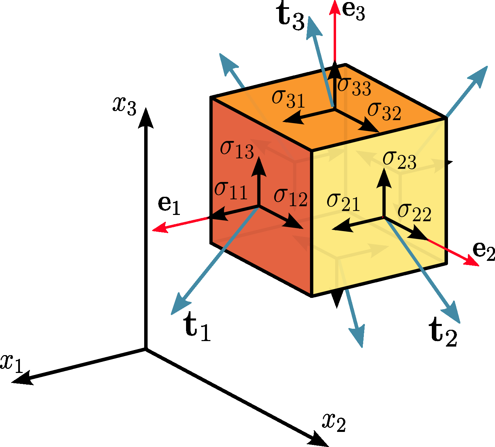

Stress tensor#
Cauchy formula in 2D#
{kind=link}
The equilibrium of forces, i.e. Euler’s first law of motion (Newton’s second law of motion) for 2D triangle, gives:
written by components we obtain
or
S = stress2([[-8, 2],
[ 2, -5]])
n = vec2(60) # unit length vector oriented 60 degrees from x
S.cauchy(n) # traction vector
Vector2(-2.268, -3.33)
Cauchy formula in 3D#
The tetrahedron is formed by slicing the infinitesimal element along an arbitrary plane n. The stress vector on this plane is denoted by \(T^{(n)}\). The stress vectors acting on the faces of the tetrahedron are denoted as \(T^{(e_1)}\), \(T^{(e_2)}\), and \(T^{(e_3)}\), and are by definition the components \(\sigma_{ij}\) of the stress tensor \(\sigma\).
{kind=link}
The equilibrium of forces, i.e. Euler’s first law of motion (Newton’s second law of motion), gives:
where the right-hand-side represents the product of the mass enclosed by the tetrahedron and its acceleration: \(\rho\) is the density, \(a\) is the acceleration, and \(h\) is the height of the tetrahedron, considering the plane \(n\) as the base.
The area of the faces of the tetrahedron perpendicular to the axes can be found by projecting dA into each face:
and then substituting into the equation to cancel out \(dA\):
To consider the limiting case as the tetrahedron shrinks to a point, \(h\) and the right-hand-side of the equation approaches 0, so:
Cauchy stress tensor#
Tensors are algebraic objects that describe linear relationship between vectors, scalars, or tensors. Here, any linear connection between two physical vector quantities is called a tensor, reflecting original use to describe the “tensions” in a material (Cauchy).
In continuum mechanics, the Cauchy stress tensor \(\boldsymbol\sigma\) is a second order tensor, with nine components \(\sigma_{ij}\), that completely define the state of stress at a point inside a material. The stress tensor is symmetric, so the number of independent stress components is equal to 6.
{kind=link}
where \(\sigma_{11}\), \(\sigma_{22}\), \(\sigma_{33}\) are normal stresses, and \(\sigma_{12}\), \(\sigma_{13}\), \(\sigma_{21}\), \(\sigma_{23}\), \(\sigma_{31}\), \(\sigma_{32}\) are shear stresses.
Indexes of stress components
The first index \(i\) indicates that the stress acts on a plane normal to the \(x_i\)-axis, and the second index \(j\) denotes the direction in which the stress acts.
Cauchy’s stress theorem#
According to Cauchy’s fundamental theorem, also called Cauchy’s stress theorem, merely by knowing the stress vectors on three mutually perpendicular planes, the stress vector on any other plane passing through that point can be found through coordinate transformation equations.
This equation implies that the stress vector \(\bf{T}^{\left( n \right)}\) at any point \(P\) in a continuum associated with a plane with normal unit vector \(\bf{n}\), can be expressed as a function of the stress vectors on the planes perpendicular to the coordinate axes, i.e. stress tensor \(\boldsymbol{\sigma}\).
S = stress.from_comp(xx=-8, yy=-6, zz=-2)
S
Stress3
[[-8 0 0]
[ 0 -6 0]
[ 0 0 -2]]
n = fol(150, 60) # normal of plane
T = S.cauchy(n) # traction vector
print(f'Magnitude of normal stress on plane {n} is {abs(T.proj(n))}')
print(f'Magnitude of shear stress on plane {n} is {abs(T.reject(n))}')
Magnitude of normal stress on plane S:150/60 is 6.125
Magnitude of shear stress on plane S:150/60 is 2.496873044429773
Sign convention#
{kind=link}
Sign convention for stress components
A stress component is positive if it acts in the positive direction of the coordinate axes, and if the plane where it acts has an outward normal vector pointing in the positive coordinate direction.